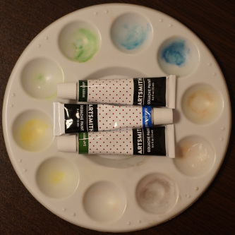
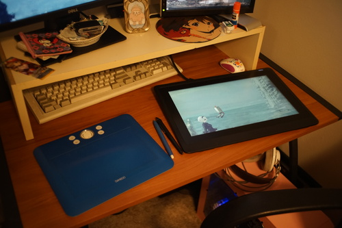

I have 3 scented fountain pen inks from Herbin. They're fun to paint with, but violet is light sensitive. I haven't noticed issues with cocoa and rose yet but I haven't tested them either.
Deleter Black 4 is allegedly water and copic proof. I highly disagree. Be careful not to wipe at this while wet because it will smear!
I frequenly use Sakura Gelly Roll in white in all 3 sizes. Another favorite is Stardust clear for a touch of glitter. The glitter does come off a bit when you touch it.
I own a white POSCA marker but it explodes every time I use it. I don't use it.
I really enjoy copics for their super brush nibs. Other brands may also have brush tips, but I haven't found one that beats copic.
I'm using the Holbein Irodori gouache summer set. I like the color choices and would happily buy the other season sets.
Do not ever buy the Artsmith gouache set. They stained my doll and my palette. Trash.
I haven't tried many sketchbooks, but I do like the Strathmore 300 and 400 series in sizes 9 x 12 inch and above. Above is a little hard to bring with you, but 9x12 is pretty comfortable.
In a moment of desperation, I purchased a Koh-i-noor 9x12 with removable pages. The paper is a little too thin for my tastes, but the killer is "removable pages" which get caught in your sleeves and pulled up as you draw.
For notebooks, Leuchtturm 1917 paper can hold up against both fountain pens and light watercoloring. Moleskine does not hold up to either. I have no idea how Moleskine has a following. Their paper is not nice.
I love lead holders due to me never wanting to sharpen pencils. I like the Koh-I-Noor Technigraph 5611 because it's metal and sturdy. I use Staedtler refills.
I was gifted a pack of Tombow Mono HB Pencils and they're very nice. The only problem is you have to sharpen them!
I'm a big fan of Sakura arch foam, Pentel Click Eraser ZE23, Pacific Arc soji.
My art program of choice is Krita due to limited Linux options. It's much easier to use than GIMP. I still use GIMP as well because there are places where Krita is lacking.
I have allocated half the space on my desk for my Wacom Cintiq 16. The cable is 72 inches long and this is NOT in the specs. I would have appreciated if it was a bit longer. I use the xsetwacom drivers with default settings. If you're confused about Bezier curve values and want to adjust them, check out this site.
I sometimes have an issue where the cursor freezes. This is annoying but easily fixed by turning the pen around to the eraser and then back. The first line drawn when switching from another program to Krita will be messed up. Click on the program outside the drawing range before drawing. I don't know where the issue lies between Krita, drivers, or the tablet.
I highly recommend a remote for your tablet. I'm using a right joycon with some slight drift, which makes it annoying to use with my switch. I connect to it using blueman and use QJoyPad chiizukeiki to map the buttons. I'm using the same Krita config, but using the multi-key strokes instead of mapping everything to unused buttons. The QJoyPad key numbering system is beyond me and does not match linux input event codes.
If your joycon is connected to your switch and you're having trouble connecting to it, use:
bluetoothctl
connect [joycon MAC address]
quit
I haven't found a reliable way to connect to it through a GUI while it is paired with a switch. Sometimes when using this method, the joycon does not show up in /dev/input. I have had trouble with this a lot and am still troubleshooting it.
Possible solution: Remove the joycon connection from your computer, disconnect your joycon from your switch using “System Settings” > “Controllers and Sensors” > “Disconnect Controllers”, set up new device. It's helpful to know your joycon's MAC address if you have more than one.
| Physical button | Keycode, scancode (hex) | QJoyPad location | mapped key (QJoyPad) | krita function |
| left arrow | BTN_SOUTH, 90001 | Button 1 | ro (key 98) | transform tool |
| down arrow | BTN_EAST, 90002 | Button 2 | katakana (key 99) | deselect |
| up arrow | BTN_C, 90003 | Button 3 | hiragana (key 100) | outline select tool |
| right arrow | BTN_NORTH, 90004 | Button 4 | b (key 56) | freehand brush tool |
| SL | BTN_WEST, 90005 | Button 5 | henkan (key 101) | undo |
| SR | BTN_Z, 90006 | Button 6 | katakana hiragana (key 102) | unused |
| - | BTN_TL2, 90009 | Button 9 | tab (key 23) | canvas only mode |
| L3 (pressed analog stick) | BTN_SELECT, 9000b | Button 11 | 5 (key 14) | reset rotation |
| screenshot | BTN_THUMBL, 9000e | Button 14 | 9 (key 103) | mirror view |
| L | BTN_THUMBR, 9000f | Button 15 | shift (key 50) | shift |
| ZL | ?, 90010 | Button 16 | ctrl (key 37) | ctrl |
| analog up/down | ABS_HAT0X | Axis 5 | Up: 7 (key 16), Down: 8 (key 17) | zoom in/out (need to be added to Krita) |
| analog left/right | ABS_HAT0Y | Axis 6 | Left: 4 (key 13), Right: 6 (key 15) | rotate 15 degrees/-15 degrees |
My Krita config is found here and my QJoyPad config is found here.
This set up is not nearly as simple and easy as on Windows. It can be a struggle. It's a labor of love for Linux.
I do use an art glove with my tablet. At first I was just larping, but my hand started sticking on the surface when I lost it and I now appreciate it a lot.